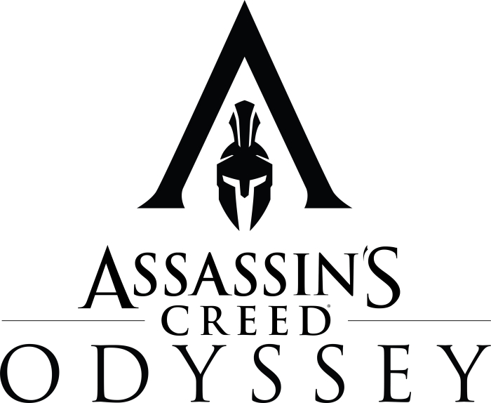

Экшен (action в переводе с англ.«действие») — жанр компьютерных игр,
в котором делается упор на эксплуатацию физических возможностей игрока,
в том числе координации глаз и рук и скорости реакции.
| Название игры |
Логотип |
Описание |
| Mass Effect: Andromeda |
|
Mass Effect: Andromeda - это самостоятельная
игра во вселенной Mass Effect, действие которой
разворачивается во время событий оригинальной
трилогии в совершенно другом конце галактики.
Игроков ждут полностью новая команда, корабль
и новые возможности. Цель игроков простая -
раскрыть тайны системы, куда прилетели
колонизаторы, и основать полноценную колонию
на одной из нескольких потенциально пригодных
для жизни планет.
|
| The Witcher 3: Wild Hunt |
 |
Действие игры происходит в вымышленном
фэнтезийном мире, напоминающем средневековую
Европу. Главный герой Геральт из Ривии, «ведьмак»
— профессиональный охотник на чудовищ — отправляется
в путешествие в поисках девушки по имени Цири, обладающей
сверхъестественными способностями. В отличие
от предыдущих игр серии, «Ведьмак 3: Дикая Охота»
— игра с открытым миром: игрок может свободно путешествовать
по обширным территориям, самостоятельно находя
новые места и задания.
|
| Assasin's Creed: Odyssey |
 |
Assassin's Creed Odyssey меняет египетский антураж и переносит
нас с вами на просторы Древней Греции, где мы напишем собственную
эпическую одиссею и создадим свое уникальное приключение. Ключевые
элементы, такие как паркур и внезапные убийства при помощи спрятанного
клинка или ядовитых ножей остались незыблемыми, однако сам геймплей ушел в сторону PRG.
|
 Экшен
Экшен